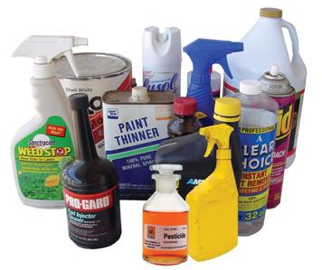
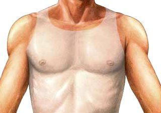
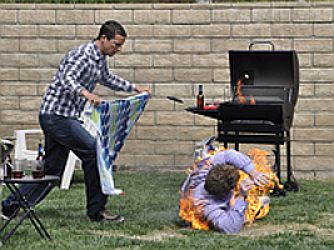

Quemaduras
Es un tipo de lesión de la piel causada por diversos agentes. Las quemaduras térmicas se producen por el contacto con llamas, líquidos calientes, superficies calientes y otras fuentes de altas temperaturas, o con el contacto con elementos a temperaturas extremadamente bajas. También existen las quemaduras químicas y las quemaduras eléctricas.
1º Grado
Las quemaduras de primer grado se limitan a la capa superficial de la piel epidermis, se les puede llamar eritema o epidérmicas. Este tipo de quemadura generalmente las causa una larga exposición al sol o exposición instantánea a otra forma de calor (plancha, líquidos calientes).
Signos:
- Ampollas intradérmicas (microscópicas).
- Enrojecimiento de la piel, piel seca.
- Descamación y destrucción de las capas superficiales o sólo enrojecimiento.
- Dolor intenso tipo ardor. Inflamación moderada. Gran sensibilidad en el lugar de la lesión.
- Dura unos días a lo mucho un mes, ya que solamente es superficial.
2º Grado
Las quemaduras de segundo grado se dividen en:
- Superficiales: Este tipo de quemadura implica la primera capa y parte de la segunda capa. No se presenta daño en las capas más profundas, ni en las glándulas de sudor o las glándulas productoras de grasa. Hay dolor, presencia de flictenas o ampollas.
- Profunda: Este tipo de quemadura implica daños en la capa media y en las glándulas de sudor o las glándulas productoras de grasa. Puede haber pérdida de piel, carbonización.
3º Grado
Una quemadura de tercer grado penetra por todo el espesor de la piel; incluyendo terminaciones nerviosas, vasos sanguíneos, linfáticos, etc. Se destruyen los folículos pilosebáceos y las glándulas sudoríparas, se compromete la capacidad de regeneración.
Este tipo de quemadura no duele al contacto, debido a que las terminaciones nerviosas fueron destruidas por la fuente térmica.
Signos:
- Pérdida de capas de piel. A menudo la lesión es indolora, porque los nervios quedan inutilizados (puede que el dolor sea producido por áreas de quemaduras de primer grado y segundo grado que a menudo rodean las quemaduras de tercer grado).
- La piel se ve seca y con apariencia de cuero. La piel puede aparecer chamuscada o con manchas blancas, cafés o negras.
- Descamación y destrucción de las capas superficiales o sólo enrojecimiento.
- Dolor intenso tipo ardor. Inflamación moderada. Gran sensibilidad en el lugar de la lesión.
- Dura unos días a lo mucho un mes, ya que solamente es superficial.
Las quemaduras también se clasifican sobre la base de su extensión:
Menores: cuando la superficie quemada no rebasa del 10% de la superficie total del cuerpo.
Moderadas: cuando la superficie quemada está entre un 10 y un 20% de la superficie total del cuerpo.
Graves: cuando la superficie quemada rebasa el 20%.
Basándonos en su extensión, se aplica la regla de Pulasky y Tennison, mejor conocida como la Regla de los Nueves
Regla de los 9
Esta fue ideada por Pulaski y Tennison en 1947 y publicada por Wallace en 1951.
Puede ser aplicada en adultos (pacientes de más de 16 años de edad), siendo imprecisa en niños debido a las diferentes proporciones corporales.
En adultos la cabeza corresponde a un 9% de la superficie corporal total; 4,5% la cara más 4,5% del dorso de la cabeza.
Cada extremidad superior otro 9 % (4,5% parte frontal más 4,5% dorso)
El tronco, un 36 % (dividido en pecho 9%, abdomen 9%, espalda 9% y parte baja de la espalda y nalgas 9%; o también en frente 18 % y dorso 18 %).
Cada extremidad inferior un 18 % (9% frente más 9% dorso).
Los genitales externos, el 1 % restante.
En niños y bebés, en cambio, la cabeza es un 18 % de la superficie corporal total, cada extremidad superior un 9 %, cada inferior un 14 % y el tronco 18 % dorsal y 18 % frontal.
Recomendaciones generales al atender una quemadura
- Para disminuir las probabilidades de infección, lávate las manos muy bien antes de tratar cualquier quemadura.
- Quitar los objetos personales (anillos, reloj, etc.) que esten cerca de la zona quemada, siempre y cuando no se cause más daño.
Qué NO hacer para curar una quemadura
- No cubras la herida con una tirita adhesiva o un algodón hidrófilo (puede provocar complicaciones posteriores).
- Tampoco revientes las ampollas, ya que son una barrera que previene la infección.
- No retires la ropa quemada pegada a la piel.
- Evita aplicar dentrífico, mentol o sustancias grasas (aceite, etc.)
Estando ante una quemadura grave, antes de aplicar cualquier tipo de primeros auxilios, debes tratar de localizar asistencia médica profesional, ya seas tú o una tercera persona.
Que hacer en caso de una quemadura por sustancias químicas
En la vida diaria, ya sea en el transporte, durante la recreación y en la actividad laboral, cualquier persona está permanentemente expuesto al contacto con compuestos tóxicos, irritantes, corrosivos, inflamables, cancerígenos o explosivos, cuyo efecto en el organismo humano puede llegar a producir lesiones de grados variables, desde simples inflamaciones tisulares, hasta lesiones tan graves que pueden llegar a producir la muerte. Las causas más frecuentes de lesiones por agentes químicos son:
- El derrame o ruptura de un contenedor, generalmente inadecuado.
- La transferencia de un agente cáustico desde su envase original a otro inadecuado.
- La dilución inadecuada.
- Uso inadecuado de productos.
- Ataques con ácidos.
1 Inmediatamente lava con abundante agua fría corriente la zona afectada.
Quita o cambia toda prenda que contenta la sustancia que provocó la quemadura, vuelve a lavar con agua fría corriente.
2 Cubre la herida con una gasa estéril o cualquier material lo más limpio que dispongas.
No revientes ninguna ampolla, ni trates de lavar con otras sustancias las heridas.
3 Si las indicaciones de primeros auxilios están impresas en el producto, síguelas con cuidado.
Lleva al lesionado al médico lo más pronto posible.
Que hacer en caso de una quemadura por electricidad
Las quemaduras eléctricas, como su nombre lo indica, son provocadas por descargas eléctricas como pueden ser: rayos, corrientes mayores de electricidad, también por un corto circuito al aplicar electro-choque sin un gel que conduzca la corriente, etc.
Por lo general, si una descarga es suficiente para provocar quemadura, hace que se produzca una quemadura de tercer grado. Pero también depende la intensidad de la corriente, para que pueda generar de, daños en la dermis, hasta poder causar la muerte por paro cardíaco.
1 Antes que nada verifica que la víctima no siga bajo la corriente eléctrica, NUNCA toques sin ver a una persona que ha sufrido una descarga o quemadura por electricidad.
Si la víctima aún está en contacto con la corriente eléctrica, busca un palo de escoba o cualquier objeto que no sea de metal y separa cuidadosamente a la víctima de la electricidad.
2 Revisa signos vitales y el estado de conciencia de la víctima, si no respira ni tiene pulso, realiza la técnica de reanimación cardiopulmonar y pide ayuda médica de inmediato.
Si la víctima esta consciente, toma sus signos vitales, aflójale la ropa que impida la circulación sanguínea.
3 No revientes las ampollas ni laves las heridas, cúbrelas inmediatamente con una gasa estéril o cualquier material limpio con el que dispongas.
Mantén al lesionado, tranquilo, cubierto con un cobertor, hasta que llegue la ayuda médica.
Que hacer en caso de una quemadura por el Sol
Son provocadas por una exposición excesiva al Sol, es decir que supera la capacidad protectora de la melanina, pigmento que protege la piel.
1 Dependiendo del tipo de piel y edad de la persona, las lesiones por el Sol pueden ser variadas. Por lo general las personas rubias o pelirrojas resisten menos las radiaciones solares, y los niños son más susceptibles que los adultos.
2 Para quemaduras ligeras, retira a la persona del Sol y aplica alguna crema humectante.
3 Cuando aparecen ampollas, debes aplicar una crema especial para la piel, cúbrela con una gasa estéril. Retira lo más pronto posible al lesionado del Sol y acude al médico.
4 Cuando una persona presenta quemaduras por sol, con ampollas, escalofríos, vómitos, debes llevar a la víctima lo más pronto posible al médico. La víctima corre riesgo de deshidratación.
Que hacer en caso de una quemadura por líquidos
1 Coloca lo más pronto posible la parte afectada bajo el chorro de agua fría, esto ayuda a bajar a temperatura de la piel en la zona afectada y a reducir la inflamación o las ampollas que pudieran formarse.
2 Por regla general no debes quitar la ropa, ya que en muchos casos, está adherida a la piel. Solo en caso de que esté impregnada en productos cáusticos o hirvientes.
3 No revientes ninguna ampolla ni laves las heridas con sustancias desinfectantes. No apliques pomadas, cremas o manteca sobre la herida.
4 Si la herida es grande, la víctima se siente mal, pierde el conocimiento, comienza con vómitos, pide ayuda médica de inmediato.
Que hacer en caso de una quemadura por fuego
Si las ropas de la víctima aún están en llamas, derriba a la persona al suelo y utilizando un trapo, un abrigo, una manta, lo que tengas a la mano intenta sofocar el fuego. (En caso de emergencia puedes utilizar tierra o arena).
1 Afloja la ropa u objetos que puedan impedir la circulación sanguínea como anillos, relojes, cinturones, zapatos. Es común que más tarde la parte quemada se inflame y resulte muy difícil retirar tales objetos.
2 Inmediatamente coloca la zona afectada bajo el chorro de agua fría por largo rato, o hasta que el dolor se detenga. No sumerjas la quemaduras de segundo o tercer grado en agua, estas requieren de atención médica urgente, únicamente cubre la zona afectada.
3 No revientes ninguna ampolla, ni apliques ningún tipo de pomada o crema. Si la víctima esta consciente puedes darle de beber líquidos fríos, nunca bebidas alcohólicas.
4 Si la víctima esta inconsciente, debes colocarla en cierta posición que no se bloqueen sus vías respiratorias. Solicita ayuda médica urgente y mantente alerta sobre una posible aparición de shock